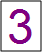
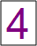
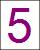
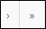
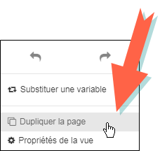

Environnement d'une vue
L’environnement de travail correspond à une vue. Il est possible de réaliser plusieurs analyses sur les différentes pages de la vue.

La vue se décompose en cinq zones principales :
: Zone de travail centrale, où seront placés les objets tels que les tableaux, les graphiques, les textes, les images, etc.
 : Explorateur menu, contenant le nom de l’enquête et le nombre de réponses en haut, ainsi que les variables répertoriées dans des sections (définies au préalable). L’icône à côté des variables donne le type de question auquel les variables appartiennent :
: Explorateur menu, contenant le nom de l’enquête et le nombre de réponses en haut, ainsi que les variables répertoriées dans des sections (définies au préalable). L’icône à côté des variables donne le type de question auquel les variables appartiennent :
-
: Question à choix unique
-
: Question à choix multiples
-
: Question échelle
-
: Question textuelle
-
: Question numérique
-
: Question de type date
-
: Question de type code

: Bandeau horizontal de cinq onglets (accueil, insertion, vue, affichage et format). Cela permet d’effectuer des opérations globales au niveau de la vue.Onglet Insertion

-
Partie Pages : permet de créer, dupliquer ou supprimer des pages
-
Partie Analyses : permet de créer différentes analyses (à plat, croisée, avancée, tableau personnalisé ou analyse textuelle)
-
Partie Textes et médias : permet de rajouter une zone de texte, image ou une forme graphique
-
Partie Filtre de vue : permet de rajouter un filtre de vue
Onglet Vue

-
Partie Vue : permet d'accéder au questionnaire de vues, créer une nouvelle vue, importer des vue d'une autre étude, sélectionner, supprimer ou dupliquer une vue et accéder à ses propriétés
-
Partie Actions : permet d'exporter la vue et de substituer une variable
Onglet Diffusion

-
Partie SphinxOnline : permet de publier la vue courante, publier l'étude complète ou encore de télécharger les vues présentes sur le serveur
-
Partie Partage : permet de partager la vue courante
-
Partie Données: permet de télécharger les données (observations) depuis le serveur.
Onglet Affichage

Depuis cet onglet, vous pouvez : modifier la mise en page de la vue (ajustement automatique, panneau flottant, afficher la grille, confirmer la suppression et choisir d'afficher les intitulés ou noms des variables).
Onglet Format

-
Partie Disposition : permet de positionner, aligner, retailler, ordonner les éléments présents sur votre vue (analyses, textes, images, formes...)
-
Partie Masque : permet d'ajouter/supprimer des éléments de la zone de masque

: Zone d’édition des propriétés des objets.Le bouton permet d’ajouter de nouveaux objets :
-
Analyse à plat
-
Analyse croisée/ multiple
-
Analyse avancée
-
Tableau personnalisé
-
Analyse textuelle et sémantique
-
Ajouter du texte
-
Ajouter une image
-
Ajouter une forme
-
Ajouter un filtre de vue

: Gestionnaire de pages, permet :-
D’ajouter une nouvelle page vierge en cliquant sur le bouton .
-
De supprimer une page en cliquant sur le bouton .
-
De naviguer sur les différentes pages en utilisant les boutons

. -
D'importer des pages depuis une autre vue en cliquant sur le bouton .
Il est possible de renommer une page en double-cliquant sur le numéro de la page et de la dupliquer en faisant un clic droit sur la vue, option dupliquer la page.
